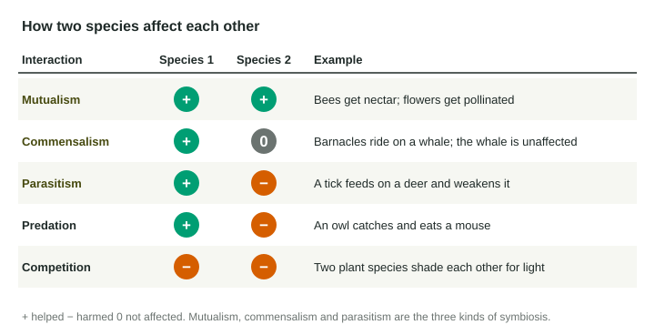

Environmental science studies how living things and their surroundings work together, and how people change them. Everything else in the course builds on a few words from this first topic: what an ecosystem is, how its living and nonliving parts fit together, and the handful of ways two species can affect each other. Learn them well and you will read every later diagram faster.
Levels of organization
Ecologists zoom out in steps. Picture a pond at the edge of a farm.
- An organism is one living thing: one green frog.
- A population is all the individuals of one species in one area: every green frog in the pond. A species is a group of similar organisms that can breed and have fertile offspring.
- A community is all the populations of different species living there: frogs, dragonflies, algae, cattails, bacteria.
- An ecosystem is the community together with the nonliving parts around it and the ways they interact: the frogs and algae plus the water, mud, sunlight and temperature.
The pond's biotic factors are its living (or once-living) parts: organisms, dead leaves, droppings. Its abiotic factors are nonliving: temperature, sunlight, water depth, dissolved minerals, wind. Abiotic factors set the stage. A cold spring keeps the water cool, fewer insects hatch, and the frogs have less to eat. That is the habit this course trains: follow a change through the system, one link at a time.
Habitat and niche
A habitat is where a species lives: the shallow, plant-filled edge of the pond. A niche is how it lives there: what it eats, when and where it feeds, what temperature and water it needs, and what eats it. Think of the habitat as an address and the niche as a job. Two species can share an address but rarely do exactly the same job for long, because that is when competition is fiercest.
How species interact
Ask one question about any interaction: is each species helped (+), harmed (−) or not affected (0)?

| Interaction | Effects | Example |
|---|---|---|
| Predation | + / − | An owl kills and eats a mouse. |
| Competition | − / − | Two grasses grow slower when they share water and light. |
| Mutualism | + / + | Bees get nectar; flowers get pollinated. |
| Commensalism | + / 0 | Barnacles ride on a whale, which is not affected. |
| Parasitism | + / − | A tick feeds on a deer and weakens it. |
The last three are kinds of symbiosis, a close, long-term relationship between two species. Parasitism and predation both help one species and harm the other. The difference is time and outcome: a predator kills its prey and eats it, while a parasite lives on or in its host for a long time and usually does not kill it right away.
Worked example: name the interaction. A fungus grows on the roots of a pine tree. The fungus takes sugar from the tree, and its threads absorb water and minerals from the soil that the tree then uses. Step 1: the fungus gets food, so the fungus is +. Step 2: the tree gets water and minerals, so the tree is +. Step 3: +/+ is mutualism. Compare a tick on a deer: tick +, deer −, which is parasitism.
Competition and resource partitioning
Competition happens when organisms need the same limited resource: food, water, light, nesting space. Each gets less, so both are harmed. It can happen between species or among members of one species.
Species that compete strongly often cannot share a place for long; one tends to push the other out. Yet many similar species do live side by side. They manage it by resource partitioning: dividing the resource so they overlap less.
- By place: two warblers eat the same caterpillars, but one feeds in the treetops and the other on lower branches.
- By time: hawks hunt mice by day and owls hunt them at night.
- By food size: birds with different beak sizes eat different sizes of seeds.
Why does it work? Each species now competes mostly with its own kind, so neither is pushed out. When you see "two species use the same resource but in different ways", think resource partitioning, and say that it reduces competition.
Reading a change through an ecosystem
Exam questions often remove or add one species and ask what happens next. Write the chain one link at a time. Foxes eat rabbits; a disease kills most foxes; fewer rabbits are eaten; the rabbit population increases; the rabbits eat more grass; the grass decreases. Name each link and say which way each number goes. "The ecosystem changes" earns nothing; "the rabbit population increases because fewer are killed by predators" does.